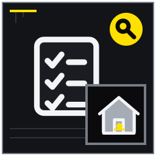
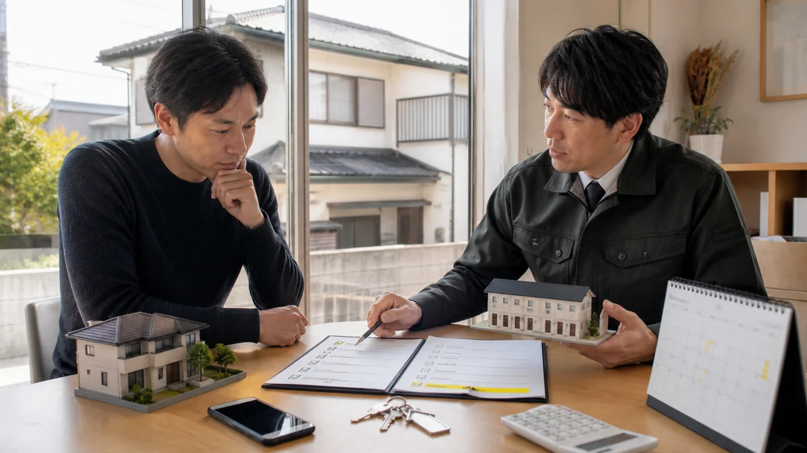
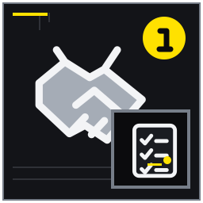

管理を集金だけで考えない
募集後に続く連絡・点検・記録・精算を全体化する。
MITSUKE RENT GUIDE 03
管理料の高低だけでなく、時間、距離、夜間、設備、記録、家族継承までを業務単位で比較する実務記事。

管理方式の比較では、資料が全部そろうのを待つより、確認済み・未確認・専門家へ聞く事項を分けるほうが実務は進みます。この記事は戸建てを貸した後の家賃管理、設備故障、近隣対応を自分で行うか委託するか迷う所有者に向け、14の論点を現地確認と相談準備の順に整理しました。管理料の高低だけでなく、時間、距離、夜間、設備、記録、家族継承までを業務単位で比較する実務記事。 結論を保証するものではなく、対象物件と契約条件に合わせて確認先を選ぶためのガイドです。
想定している検索時の疑問は、「戸建て賃貸 自主管理」「賃貸管理 委託 内容」「遠方 実家 貸す 管理」で、業務範囲と管理会社選びを知りたい。 以下では広告上の一言で判断せず、記録、比較、相談境界、次の行動を章ごとに示します。

募集後に続く連絡・点検・記録・精算を全体化する。
入金確認、連絡、保証会社連携の順と記録を整理する。

入金だけでなく修繕、反響、巡回、要対応を報告項目にする。
申込、契約、本人確認、連絡履歴を安全に扱う。
募集後に続く連絡・点検・記録・精算を全体化する。 賃貸管理は家賃の入金確認だけではありません。募集条件の引継ぎ、入居者からの連絡受付、滞納時の連絡、設備故障の業者手配、鍵の管理、庭や近隣への対応、更新・退去、書類保存までが連続した業務です。自主管理と委託を比べるときは、管理料率だけでなく、この一連の仕事を誰が、何時までに、どの記録を残して行うかを分解します。
家賃は自動入金でも漏水連絡が休日に来る例を置く。 例えば月初に入金を確認できても、夜に給湯器が止まり、翌朝には隣家から枝の越境を指摘されることがあります。所有者が集金だけを担当し、設備受付は管理会社、剪定判断は家族という分担も可能ですが、入居者が三つの窓口へ連絡する設計は混乱を招きます。受付は一本化し、その先で業務担当へ振り分ける流れを決めるほうが実務的です。
対応範囲は管理契約により異なる。 「管理料が安いから自主管理」「すべて任せられそうだから委託」という決め方では、契約外業務と所有者判断が残ります。委託しても修繕費の承認や最終的な契約判断まで自動で移るわけではありません。自主管理でも仲介、保証、修理業者を利用できます。方式名から範囲を推測せず、平常時・緊急時・退去時の業務表を作って抜けを探します。
年間業務を月別に書き出す。 管理業務分担表には、業務名、一次受付、現地対応、費用承認、入居者への回答、記録保管の六列を設けます。各行に受付可能時間と目標回答時間も記し、担当者が休みの場合の代替を登録します。年一回しか起きない更新や退去も省かず、委託候補には同じ表で回答してもらいます。空欄がある箇所こそ、契約前に確認すべき管理リスクです。
平日、夜間、現地移動の現実的な負担を確認する。 自主管理の可否は、意欲より実際に使える時間と現地までの距離で判断します。見付の物件へ通常時と夜間・休日に何分で着けるか、勤務中に電話を取れるか、長期不在時に代わる人がいるかを測ります。毎月の入金確認は遠隔でできても、漏水、鍵の紛失、台風後の確認、退去立会いは現地対応が必要になるため、業務ごとに距離の影響が違います。
県外から片道二時間で見付へ向かう場合を想定する。 所有者が浜松方面へ勤務し、平日は見付まで片道一時間かかるなら、給湯不良の写真受付はできても当日訪問は難しいかもしれません。近隣の家族が鍵を持つ場合も、その人が入居者対応や業者立会いまで了承しているか確認します。年二回の剪定だけ所有者が行い、夜間の設備受付と退去立会いを委託するなど、部分的な分担も比較対象にできます。
善意の親族を無期限の担当者にしない。 「近いから行ける」は、仕事、介護、体調、車の利用状況が変わると成立しません。また、急いで現地へ行けても、ガスや電気の故障を所有者が直せるわけではありません。専門業者へつなぐまでの受付と、安全に関わる判断を分けます。家族の善意を常時対応の前提にせず、できない曜日・時間帯を先に明記すると委託すべき範囲が見えます。
通常時と緊急時の到着可能時間を記す。 一週間を想定して、平日昼、平日夜、土日、年末年始の四区分で電話受付、現地到着、業者立会いが可能かを記入します。実際に物件まで移動し、駐車や鍵の受渡しを含む所要時間を測ってください。自主管理案には移動費と作業時間も年額で置きます。代替者の氏名、対応範囲、連絡順を登録し、半年ごとに生活状況の変化を確認します。
故障、騒音、契約、支払を適切な担当へ振り分ける。 入居者窓口は、電話、メール、メッセージのどれを使うかだけでなく、一本の受付先を明示します。入金の質問は所有者、故障は管理会社、庭は親族という内部分担でも、入居者にはまず同じ窓口へ連絡してもらい、受付側が担当へ振り分けます。契約時に受付時間、緊急時の連絡先、写真を送る方法を説明し、口頭案内だけで終わらせません。
庭木相談と水漏れが同日に届く例で受付票を示す。 例えば「お湯が出ない」と連絡が来たら、受付者は住所・部屋、発生時刻、エラー表示、ガスや電気の状況、漏水や異臭の有無を確認します。その後、設備担当へ型番写真を送り、所有者には概算と対応予定を報告します。入居者へは受付番号と次の連絡時刻を返します。誰が直接業者を呼んでもよいかも決めておけば、二重手配を防げます。
個人SNSだけに履歴を残さない。 複数の家族が個別に回答すると、「交換する」「様子を見る」という指示が食い違います。個人の携帯番号だけを窓口にすると、紛失、担当変更、深夜着信の扱いも不安定です。また、24時間受付と24時間現地対応は同じではありません。委託会社の案内に24時間とあっても、受付後の出動条件、費用、翌営業日扱いとなる内容を契約で確認します。
専用連絡先と受付時間を決める。 分担表には公開する連絡先、受付時間、緊急判定、内部転送先、回答期限を記します。定型の受付票を用意し、日時、申告内容、写真、対応者、入居者へ返した内容を一件ずつ残します。所有者が不在の場合の代替承認者も登録します。契約更新時には連絡先が有効かテストし、担当変更があれば入居者へ書面で通知して旧窓口を閉じます。
入金確認、連絡、保証会社連携の順と記録を整理する。 家賃管理は、入金の有無を確認するだけでなく、入金日、名義、金額の照合、未入金時の連絡、保証会社との手続、所有者への報告まで含みます。支払期日の翌日に誰が確認し、何日目にどの方法で連絡し、いつ委託会社や保証会社へ渡すかを先に決めます。自主管理でも感情的な督促を避け、契約書と保証条件に沿った一定の手順で記録します。
支払日の見落としか事情があるかを段階確認する。 例えば月末払いで翌月1日に未入金を確認したら、同日中に振込名義違いと銀行休業日を確認し、2日に事務的な入金確認を送る、所定日まで解消しなければ保証会社へ報告する、と段階を定めます。入居者が一部だけ払った場合、勝手に翌月分へ充当せず契約と専門的判断を確認します。委託なら督促回数、保証請求の担当、所有者への送金日を聞きます。
威圧的な督促や自己判断の立入りをしない。 滞納対応を電話だけで済ませると、言った・言わないが残ります。一方で、いきなり強い表現の書面を送れば関係を悪化させます。契約解除、明渡し、遅延損害金など法的判断が必要な段階を、所有者や管理担当の独断で進めないでください。保証会社を利用していても、報告期限や免責があるため「保証があるから放置できる」と考えないことが重要です。
管理契約と保証条件の連絡手順を読む。 分担表には支払期日、確認日、初回連絡、再連絡、保証会社通知、専門家相談の各期限と担当者を記します。入金台帳は通帳の摘要だけに頼らず、対象月、契約額、入金額、差額、対応状況を管理します。委託会社の月報と実際の着金を照合し、送金控除の内訳も保存します。滞納が解消した後も対応履歴を消さず、次回の手順改善へ使います。
緊急度、使用停止、業者手配、負担判断を分離する。 設備故障の一次受付では、緊急度の判定、使用停止の案内、業者手配、費用負担の判断を一度に行わないことが大切です。まず人身や漏水拡大の危険があるかを確認し、安全確保を優先します。次に設備台帳から所有設備か入居者持込みか、型番、設置年、保証、過去修理を確認し、指定業者へ情報を渡します。費用負担は原因判明前に約束しません。
給湯不良を型番写真とエラー番号で受ける例を扱う。 給湯器のエラーなら、操作盤の番号、機器全体と銘板、ガス栓周辺の写真を受け、異臭があれば使用を止めて適切な緊急窓口へ案内します。エアコンなら電源、リモコン表示、漏水箇所を確認しますが、入居者へ分解を依頼しません。鍵業者、給排水、電気、ガス、建具など分野別の連絡先と営業時間を用意し、受付者が検索から始めない状態にします。
費用負担を受付時点で断定しない。 原因が入居者の使い方に見えても、受付時点で費用請求を断定しないでください。現地診断、契約上の修繕分担、経年劣化の状況を確認して決めます。また、最安の業者を探す間に漏水が広がるような場面では、応急処置と本復旧を分けます。委託契約の「緊急対応」が出張だけか、部品代や夜間料金まで含むかも事前に確認します。
設備台帳と指定業者一覧を用意する。 設備台帳には名称、設置場所、メーカー、型番、年式、所有区分、保証書、修理履歴、指定業者を登録します。受付票には症状、発生時刻、安全案内、写真、手配先、到着予定、見積、承認、完了確認を残します。自主管理案と委託案で、夜間受付から業者到着までの担当を線でつなぎ、止まる箇所を探してください。年一回、連絡先と部品供給状況を更新します。
予備鍵の保管、入室同意、緊急時の連絡を確認する。 予備鍵は、保管場所と本数だけでなく、誰がどの条件で取り出し、いつ返したかまで管理します。入居中の住戸は入居者の生活空間であり、所有者だから自由に入れるわけではありません。点検や修理で入室が必要な場合は、目的、希望日時、立会いの有無を事前に伝え、契約と法令に沿って同意を得ます。緊急時の扱いも契約時に説明します。
不在修理のため入室日を調整する例を示す。 例えば入居者不在日に水栓修理をするなら、管理窓口が候補日時を調整し、入室同意を記録し、鍵保管者から業者へ貸し出します。作業後は施錠確認、鍵返却、作業箇所の写真、入居者への完了報告まで一件の業務です。玄関の予備鍵と倉庫・勝手口の鍵を混ぜず、キータグには住所を直接書かないなど、紛失時の影響も抑えます。
所有者でも契約中の住戸へ無断で立ち入らない。 電話に出ないという理由だけで無断入室しないことが原則です。漏水や火災など緊急性がある場面でも、連絡を試みた記録、入室理由、同行者、作業内容を残します。鍵を家族の引出しや屋外の隠し場所へ置く運用は、所在確認とアクセス制限ができません。委託会社が鍵を預かる場合は、複製、紛失時対応、契約終了時の返還方法を確認します。
鍵保管者と受渡記録を決める。 鍵台帳には鍵番号ではなく管理用ID、対象箇所、本数、保管者、貸出・返却日時、受領者を記録します。入室申請のひな型には目的、日時、参加者、同意取得方法、作業後報告を設けます。紛失時の連絡順と交換判断者も決めてください。退去時は返却本数を入居時記録と照合し、管理委託を変更するときは旧会社からの返還確認を引継ぎ項目にします。
戸建て特有の屋外管理と苦情対応を契約へ落とす。 戸建て管理では、室内設備だけでなく庭、樹木、側溝、塀、境界付近、屋外水栓、ごみ出しに関する連絡が生じます。入居者の日常手入れ、所有者が手配する剪定、管理会社の巡回、専門業者による危険木対応を分け、賃貸借契約と管理委託契約の表現を揃えます。「庭は入居者管理」だけでは、草丈や剪定範囲、費用負担が伝わりません。
落ち葉が隣地へ入る連絡を受けた例を想定する。 落ち葉が隣地へ入ると連絡を受けた場合、窓口は発生日、場所、写真、相手の要望を記録し、入居者の日常清掃で対応できる範囲か、高木剪定を所有者が手配すべきかを判定します。低木の草取りは入居者、年一回の高木剪定は所有者、台風後の倒木危険は管理会社が一次確認、という具体的な分担なら対応が止まりません。
境界や越境は管理会社だけで確定できない場合がある。 境界標の位置や枝・根の越境を、管理会社の目視だけで確定しないでください。塀の所有や土地境界に争いがある場合は、図面や権利資料を揃え適切な専門家へ確認します。近隣からの苦情は、入居者へ責任を押し付ける前に事実を確認し、相手の連絡先を必要以上に共有しません。庭作業で敷地へ入る際も、入居者との日時調整が必要です。
剪定頻度と一次連絡先を合意する。 屋外管理表には場所別に日常手入れ、定期作業、緊急作業の担当と頻度を記します。剪定見積、実施日、作業前後写真、近隣連絡履歴を保存し、次回時期を登録します。契約前には入居者向け説明と委託会社の業務範囲を照合し、草刈りが別料金なら単価や手配期限を確認します。台風前後の巡回担当も季節予定へ組み込みます。
入金だけでなく修繕、反響、巡回、要対応を報告項目にする。 定期報告は、家賃が入ったという一行だけでは管理判断に足りません。入金と送金の内訳、未収、入居者連絡、設備修繕、巡回結果、近隣対応、契約更新予定、所有者が判断すべき事項をまとめます。自主管理でも月一回、自分向けの月報を作ると、電話メモや領収書が散らばりません。委託なら、報告頻度だけでなく証跡の内容と緊急報告の基準を比べます。
写真付き月報と退去時報告を比べる。 写真付き月報では、毎月同じ位置から外壁、庭、駐車場を撮ると変化を追えます。ただし入居中の室内を定例撮影する運用は、契約とプライバシーへの配慮が必要です。退去時報告は、入居時写真との比較、損耗箇所、見積、負担判断を別途詳細にします。月報一枚で退去精算まで代用せず、業務ごとに必要な記録の粒度を決めます。
報告頻度が高ければ必ず管理品質が高いとは限らない。 報告回数が多くても、対応結果や未処理事項が書かれていなければ品質は判断できません。「対応済み」だけでなく受付日、業者、金額、完了確認日を確認します。逆に、所有者がすべての軽微な連絡へ即時判断を求められる契約では委託の効果が薄れます。報告が必要な金額・事故と、月報へまとめてよい事項の境界を設定します。
必要な証跡を三つ選ぶ。 必要な証跡として、入金明細、案件別対応履歴、修繕の見積・完了写真を最低限選びます。月報には未完了案件、次回期限、所有者承認待ちを一覧にし、前月からの持越しを消さない形式にします。候補会社には実際の様式例を見せてもらい、データを契約終了時に受け取れるか確認します。自主管理では毎月同じ日を締日にし、通帳と案件票を照合します。
基本業務、別料金、免責、解約、再委託を確認する。 管理委託契約は「管理一式」という名称では比較できません。家賃収納、督促、入居者受付、設備手配、巡回、更新、退去立会い、原状回復精算、鍵保管、庭管理について、基本料に含むか、別料金か、対象外かを一行ずつ確認します。再委託する業務、立替金の上限、報告方法、契約期間、解約予告も読み、口頭説明は質問回答として書面に残します。
草刈りが管理料外となる契約例を比較する。 例えば月額管理料が家賃の5％でも、草刈り手配は一回ごとの事務料、退去立会いは別料金、夜間出動は実費という契約があります。別会社が6％でもこれらを含むなら、年間総額は逆転する可能性があります。月8万円の物件を想定し、通常年、設備故障年、退去年の三ケースで、基本料と追加費用を同じ条件で計算します。
名称が同じ管理プランでも中身は事業者ごとに違う。 名称が同じ「集金管理」「総合管理」でも内容は事業者ごとに異なります。また、修繕手配を含むことと、工事代金を含むことは別です。成約、滞納回収、修理完了など結果が保証されると受け取らず、管理会社が行う行為と所有者が負う費用・判断を区別します。解約時に鍵、契約書、入居者履歴、預り金がどう引き継がれるかも確認してください。
同じ質問票で候補会社へ確認する。 比較表には各業務を縦に並べ、含む・別料金・対象外、単価、受付時間、報告期限、再委託先を記入します。同じ質問票を二社以上へ渡し、回答が曖昧なら契約条項番号とともに再確認します。初年度費用と月額費を分け、退去時までの総額を試算してください。採用理由は価格だけでなく、現地対応網、記録、担当不在時、引継ぎの評価を残します。
登録、重要事項説明、財産分別など制度の入口を理解する。 賃貸住宅管理業法は、委託先を比べる際の制度上の入口です。一定規模以上の賃貸住宅管理業者には登録が義務付けられ、管理受託契約に関する重要事項説明、契約書面の交付、財産の分別管理、定期報告などのルールがあります。自分の物件と候補会社にどの規定が当てはまるかは、国土交通省の最新情報と会社の説明で確認します。
一定規模の管理業者に関する公開情報を確認する。 候補会社については、商号や登録番号を聞き、国土交通省の公開情報と照合します。重要事項説明では、管理業務の内容、実施方法、報酬、契約期間、更新・解除、再委託など、自分の分担表と関係する箇所へ印を付けます。説明を受けた担当者、日付、交付書面を保存し、営業資料と契約本文の表現が異なる場合は署名前に質問します。
制度対象や義務の適用は個別状況を公式窓口へ確認する。 登録の有無だけで個別の管理品質が保証されるわけではなく、制度対象外だから直ちに不適切とも断定できません。制度の適用規模や義務内容を記憶で判断せず、公式ポータルの更新情報を確認してください。また、サブリースと管理受託を同じものとして読まないよう、家賃を誰が支払う契約か、入居者との賃貸借関係がどうなるかを区別します。
国交省ポータルと契約書を照合する。 分担表の制度確認欄には、会社名、登録番号、確認日、重要事項説明書、管理受託契約書の保存場所を記します。財産分別の方法、所有者への定期報告、苦情窓口、契約終了時の精算を質問項目に加えます。分からない条項は署名前に候補会社へ照会し、必要に応じて公式窓口や専門家へ確認します。法制度の確認を料金交渉の後回しにしないことが大切です。
都度承認と一定額までの裁量を使い分ける。 修繕は、すべて都度承認では夜間の漏水対応が遅れ、すべて管理会社判断では所有者が費用を把握できません。応急措置、軽微修繕、本交換を分け、金額と緊急度で承認ルールを作ります。止水や安全確保は即時、一定額以下の部品交換は事後報告、高額な設備交換は見積承認というように、行為と上限を管理委託契約へ反映します。
漏水止水は即時、交換は見積承認とする例を置く。 例えば漏水時は、元栓閉止と養生を上限3万円で即時手配し、原因調査後の配管交換が8万円なら所有者承認を取る、給湯器本体交換が25万円なら原則二社見積とする、と決めます。所有者へ連絡がつかない場合は第二承認者へ回し、入居継続に重大な支障があるときの例外も定めます。自主管理でも同じ判断表を業者と家族が見られるようにします。
安さ優先で安全対応を遅らせない。 承認額を低くしすぎると、出張料だけで確認が止まり被害が広がることがあります。一方、緊急という言葉で不要な本交換まで事後承認にしないよう、応急と恒久工事を分けます。安全対応を相見積待ちで遅らせず、価格比較できる部分は復旧後に検討します。立替可能額、夜間割増、キャンセル料、保険連絡の担当も契約で確認してください。
金額帯別の承認者を登録する。 修繕承認表には、事故種別、即時に許可する行為、上限額、承認者、第二承認者、報告期限を登録します。受付から写真、見積、承認、発注、完了、請求まで案件番号でつなぎます。上限は設備価格や物価の変化に合わせて年一回見直します。例外対応が起きたら理由と実額を記録し、次回は通常ルールへ組み込むか家族と管理会社で検討します。
申込、契約、本人確認、連絡履歴を安全に扱う。 管理では、入居申込書、本人確認資料、契約書、保証情報、口座、連絡履歴など個人情報を扱います。必要な人だけが、必要な期間だけ閲覧できる保存方法を決めます。家族共有の便利さだけで、全書類を同じクラウドフォルダへ置かないでください。管理会社へ委託する場合も、提出方法、保管、再委託先との共有、契約終了時の返却・削除を確認します。
家族共有クラウドへ必要以上の書類を置く問題を扱う。 例えば家族へ月報を共有するとき、入居者の本人確認画像や緊急連絡先まで添付する必要は通常ありません。所有者判断に必要な修繕額と進捗だけを共有し、詳細書類はアクセスを限定した保管先へ置きます。紙の契約書は施錠できる場所、電子データは個別アカウントと多要素認証を使い、共通パスワードをメッセージで回さない運用にします。
保管期間や取扱いを自己流で決めず契約・法令を確認する。 保管期間を自己流で短く決めたり、担当者の個人端末だけへ保存したりすると、滞納や退去精算、相続時に履歴を確認できません。反対に、目的を失った本人確認資料を無期限に複製しておくことも避けます。法令・契約・業務上必要な期間を確認し、誤送信や紛失が起きたときの報告先を決めます。実家カルテには機密資料そのものではなく所在を載せます。
閲覧者と保存場所を限定する。 書類台帳には文書名、対象契約、原本・写し、保存場所、閲覧権限、保存開始日、見直し日、廃棄担当を記します。メール添付は案件フォルダへ移し、対応履歴と結び付けます。委託先変更時は、鍵と同様にデータ受領一覧を作り、旧担当のアクセス停止を確認してください。年一回、退職者や役割を離れた家族の権限を外し、バックアップから復元できるかも点検します。
一人の記憶に依存せず家族へ引き継げる状態を作る。 管理を一人の記憶へ依存させると、その人の病気、転居、死亡、管理会社の担当交代で止まります。物件・入居者・契約・設備・鍵・業者・修繕・入金の情報を台帳化し、担当者が替わっても次の期限と未処理事項が分かる状態にします。家族の連絡担当を変えるだけでなく、誰に契約や費用承認の権限があるかを資料で確認します。
高齢所有者から子へ連絡担当を替える例を示す。 高齢の親が所有者で、子が日常連絡を担う場合、子の電話番号を管理会社へ伝えるだけでは契約変更の権限まで生じません。親が説明を受け判断できるうちに、連絡補助の範囲、緊急時の第二連絡先、通帳や契約書の所在を整理します。相続が発生した場合は、賃料の受取、敷金等の預り、修繕承認、管理契約の扱いを専門家と確認して更新します。
所有権や代理権の変更を連絡先変更だけで済ませない。 「家族だから分かる」「担当会社に残っているはず」という前提は危険です。担当者個人のメールや電話メモだけでは、会社内の引継ぎで消えることがあります。また、所有権や代理権の変更を入居者への連絡先変更だけで済ませないでください。法務・税務・契約上の確認が必要な事項と、単なる受付担当変更を分け、未確定の権限で契約書へ署名しません。
管理台帳と権限確認を更新する。 引継ぎ表には、現在の所有者・賃貸人、管理契約名義、連絡担当、承認者、第二連絡先、各権限の根拠資料を記します。未処理案件、次回更新、保険満期、剪定時期、設備保証期限を日付順に並べます。担当変更時は旧担当と新担当で鍵本数、預り金、原本、電子データを照合し、受渡書を残します。半年に一度、家族が実際に資料へ到達できるか確認します。
管理範囲、緊急連絡、設備、家族判断を一元化する。 管理方針は実家カルテへ、正式書類の代わりではなく索引として残します。管理方式、自主管理と委託の境界、入居者窓口、緊急連絡、家賃入金、設備、鍵、庭、修繕承認、契約更新の最新版へたどれるようにします。資料を一か所へ無理に移すより、原本の保管場所、電子データのURL、管理者、更新日を一覧にするほうが安全に引き継げます。
遠方家族が月報と修繕履歴を確認できる形にする。 遠方の家族が確認する場合は、月報の要点、未処理修繕、次回の剪定、口座照合日をカルテの表紙へまとめます。給湯器案件を開けば、受付票、型番写真、見積、承認、完了写真、請求へ進める構成にします。管理会社が替わっても共通の設備IDと案件番号を使えば、同じ故障履歴を新担当へ説明できます。家族会議の決定日と反対意見も記録します。
カルテは管理委託契約や法的権限を代替しない。 カルテを共有しただけでは、管理受託契約、賃貸借契約、法的な代理権は変わりません。入居者の個人情報を家族全員へ公開する道具にもせず、閲覧範囲を役割別に分けます。管理会社の正式報告や契約書は原本として保存し、カルテ側は所在と要約を示します。未確認の境界、設備所有、権限を推測で確定せず、質問先と期限を添えて残します。
希望条件を持って管理相談を予約する。 最終ページには、入居者向け窓口、24時間緊急連絡、管理会社担当、所有者承認者、鍵保管者、庭担当、税務・法務の相談先をまとめます。月次、設備故障、退去、担当変更の四つの更新契機を設定し、更新者を決めてください。管理相談にはこの索引と分担表を持参し、候補会社の契約範囲を空欄へ入れて比較します。誰が読んでも次の一手が分かることが管理継続の基準です。
管理方式の比較の準備状況を確認するため、完了・未完了だけでなく根拠資料の場所も記してください。
委託料は減っても移動、連絡、記録、業者手配などの時間・実費が生じる。まず現況を変えずに相談材料をそろえると、必要な作業の順番を決めやすくなります。
契約範囲と承認額による。築年数だけで可否を決めず、安全性、設備、費用、募集条件を対象物件ごとに確認します。
現地対応者、夜間窓口、鍵、業者網が確保できるかを業務別に検討する。相談に参加できることと契約権限は別なので、名義と委任の状況を資料で確かめます。
料金だけでなく業務範囲、別料金、報告、緊急時、解約、担当体制を同じ質問で比べる。想定賃料と安全上必要な工事を先に整理し、印象改善工事は回収可能性を見て判断します。
家族共有の情報整理に使えるが、正式な管理記録や契約上の報告を置き換えない。カルテは未確認事項を専門家へ渡す索引であり、法務・税務・建物診断の結論そのものではありません。
制度や手続は更新されるため、公開元の最新情報と対象範囲を確認してください。リンク先の説明は個別物件への判断を代替しません。
本記事は2026年8月時点の一般的な情報整理と相談準備を目的としています。対象物件の安全性、適法性、契約条件、税務上の取扱い、修繕の必要性を診断・保証するものではありません。法務は弁護士・司法書士、税務は税務署・税理士、建物の安全や工事は建築士・施工業者、行政制度は担当窓口へ個別に確認してください。富士ヶ丘サービス株式会社は宅地建物取引業者として、戸建て賃貸の現況整理、募集条件、管理方法、売却を含む選択肢の相談を承ります。